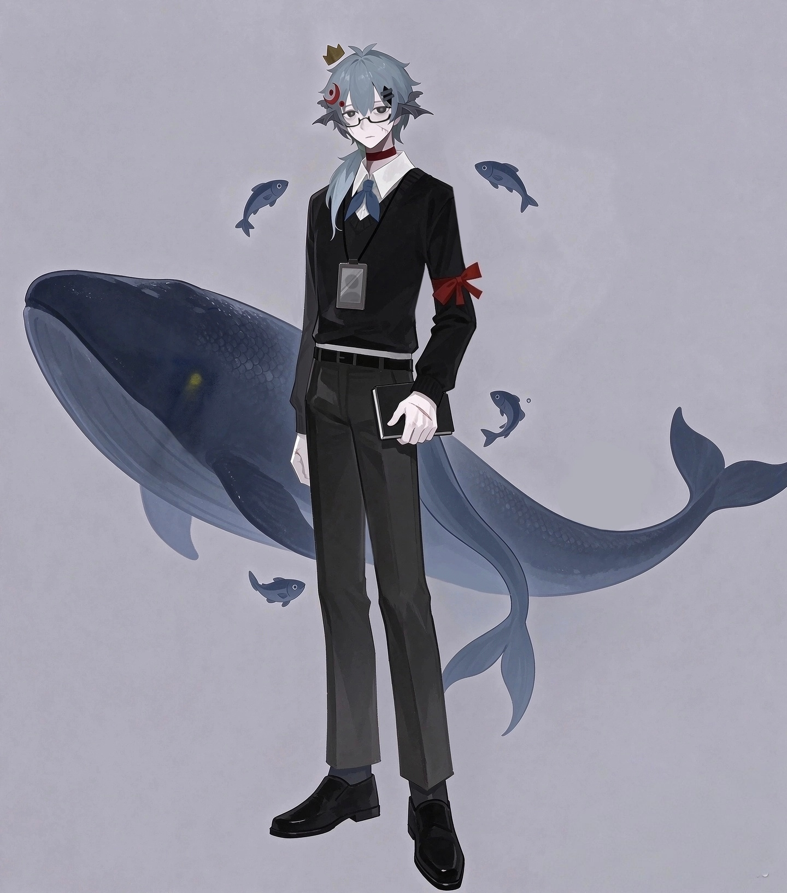
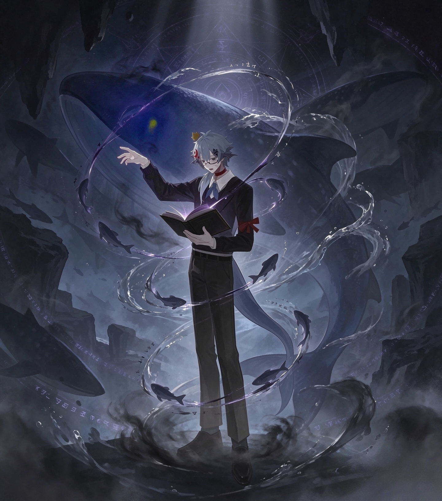
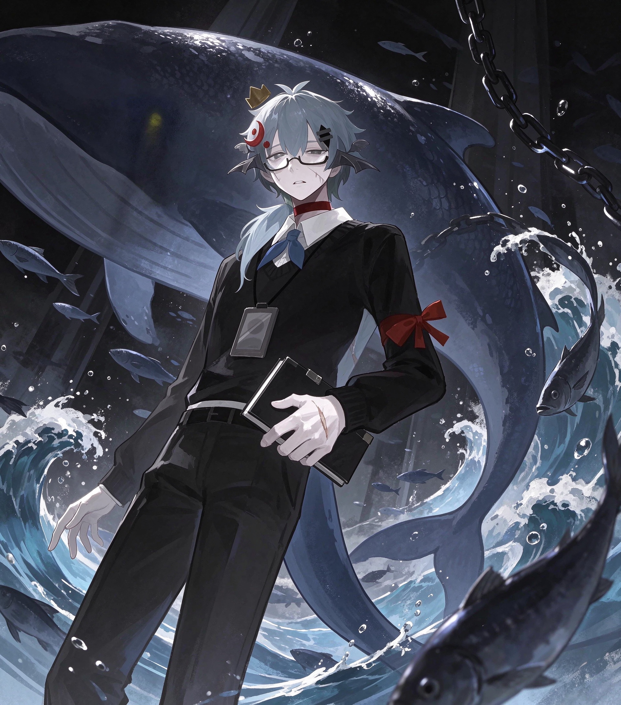

你无从知晓???的过去，单你能确认他和渝纪很像。从他那令人不安的气场来看，他绝对经历过极大的打击。???掌握着现已失传的古代魔法，行迹诡异，有伤害他人的案例，被视作为王国的公敌

古代魔法被视作为黑魔法，他们有着不同于现代魔法的可怕力量，但同时也有很大的副作用，使用它们的时候稍有不慎将酿成大祸。但???能熟练使用古代魔法，没人知道他是从哪学到这些的

???在一定程度上可以控制海洋的流动，还可以控制海洋生物为他所用，其身边常年伴随着一只拥有金色瞳孔的鲸鱼作为他的护卫
暂无